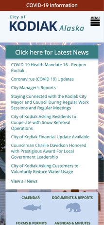
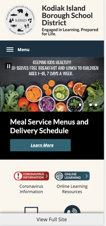

Design Principles
Amber Jardine
Alignment
city.kodiak.ak.us
All of the elements on this page have a strong alignment. The text inside of the latest update section is all aligned to the left. The edges of each section are aligned with each other.
White Space
comeuntochrist.org
There isn't a whole lot going on in this webpage. There is plenty of white space in the design to let your eyes rest between lines. The space between the sections help to guide your eyes through the page.
Proximity
kibsd.org
The different elements in the page are grouped together to show relationship. The title and subtitle are close together so you read them together. The section in the middle of page is close so you read it as a group. And the information section at the bottom, although the individual links are further from other links, you see those links as a group.